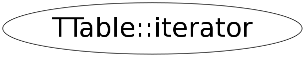

class TTable::iterator
TTable It is a base class to create a "wrapper" class holding the plain C-structure array (1 element of the structure per element)
Function Members (Methods)
public:
| ~iterator() | |
| TTable::iterator | iterator() |
| TTable::iterator | iterator(const TTable::iterator& iter) |
| TTable::iterator | iterator(const TTable& table, TTable::iterator::vec_const_iterator& arowPtr) |
| void* | operator void*() const |
| Bool_t | operator!=(const TTable::iterator& t) const |
| Long_t | operator*() const |
| TTable::iterator | operator+(Int_t idx) |
| void | operator++() |
| void | operator++(int) |
| void | operator+=(Int_t idx) |
| TTable::iterator | operator-(Int_t idx) |
| Int_t | operator-(const TTable::iterator& it) const |
| void | operator--() |
| void | operator--(int) |
| void | operator-=(Int_t idx) |
| void | operator=(const TTable::iterator& iter) |
| Bool_t | operator==(const TTable::iterator& t) const |
| void* | rowPtr() const |
| const Long_t& | RowSize() const |
| const TTable& | Table() const |
Data Members
private:
| TTable::iterator::vec_iterator | fCurrentRow | |
| Long_t | fRowSize | |
| const TTable* | fThisTable |
Class Charts
{kind=link}
{kind=link}
{kind=link}
{kind=link}

Function documentation
iterator(const TTable& table, TTable::iterator::vec_const_iterator& arowPtr)
fCurrentRow(* const_cast<vector<Long_t>::iterator *>(&arowPtr) ) {;}
{;}iterator operator+(Int_t idx)
{ std::vector<Long_t>::iterator addition = fCurrentRow+idx; return iterator(*fThisTable,addition); }iterator operator-(Int_t idx)
{ std::vector<Long_t>::iterator subtraction = fCurrentRow-idx; return iterator(*fThisTable,subtraction); }void * rowPtr() const
{ return (void *)(((const char *)fThisTable->GetArray()) + (*fCurrentRow)*fRowSize ); }Bool_t operator==(const TTable::iterator& t) const
{ return ( (fCurrentRow == t.fCurrentRow) && (fThisTable == t.fThisTable) ); }